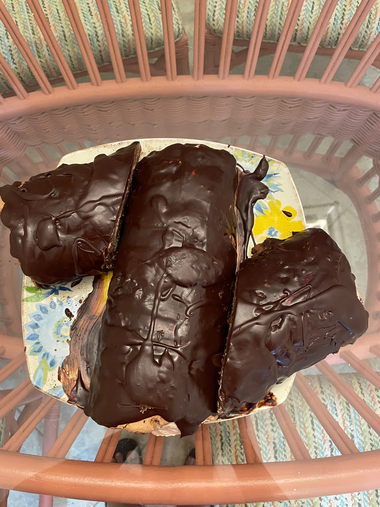
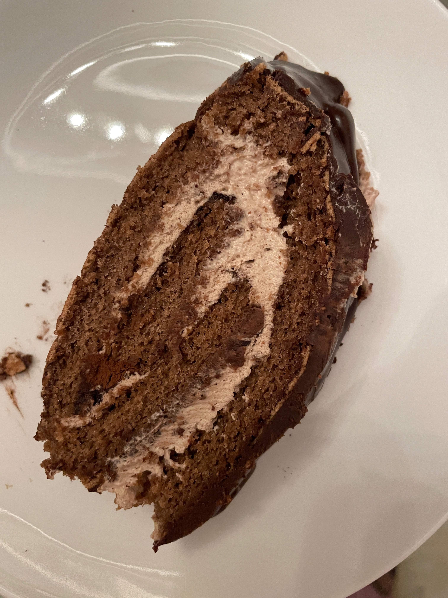
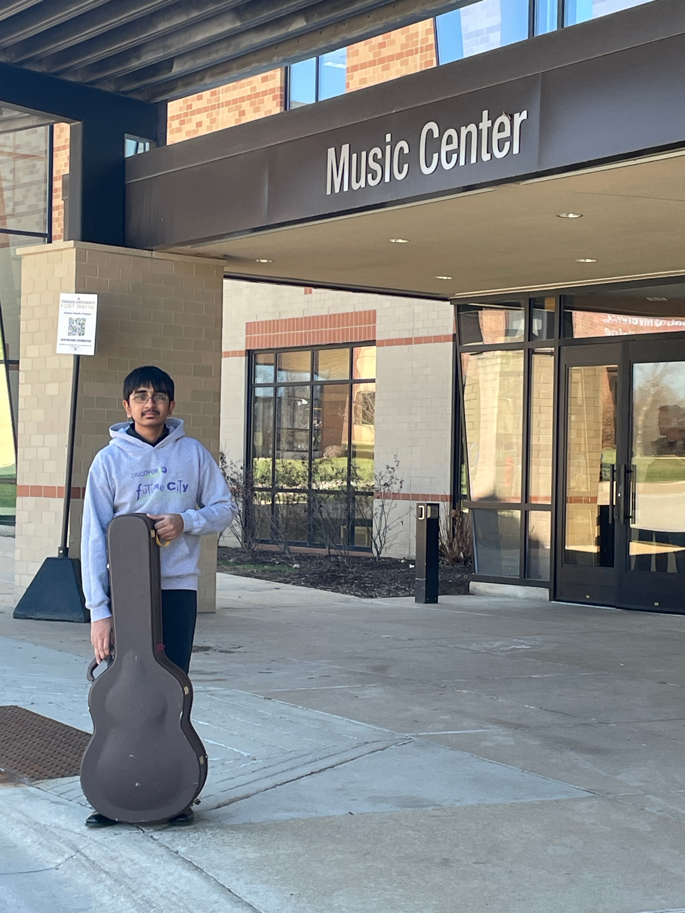

Agneya will be a sophomore at Williamsville East High School, NY, next month. He loves music and plays the violin, classical and electric guitars, and is an active member of the Jazz Club in school, the Buffalo community guitar orchestra of SUNY Buffalo, and the Amherst School of Guitar. He loves to read, bake, hang out with his friends, play video games, in his spare time.